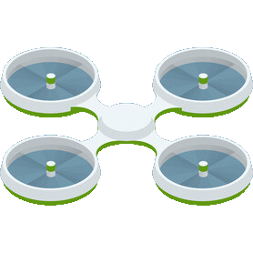

Parcelles
Graines


Machines

Ce robot permet d'hydrater les plantations du champs sur plusieurs héctares grâce à sa
contenance en eau qui est égales à 200 litres. Le robot ce déplace librement sur les terres grâce à son ia développée et grâce au
paramétrage de la carte et de ses cibles préétablies. La machine fonctionne aussi à l'énergie solaire et
est donc économe en énergie.

Sorte de tracteur nouvelle génération, qui avec un outil à l'arrière peut permettre de labourer et sillonner
les champs à une vitesse et précision inégalable. De plus, cet appareil est auto suffisant du fait qu'il consomme
de l'énergie solaire, ce qui est un grand avantage en terme de consommation d'énergie.

Cette machine permet de semer les graines choisies sur plusieurs hectares grâce aux 60kg de produits
qu'il peut contenir. Le robot ce déplace librement sur les terres grâce à son ia développée et grâce au
paramétrage de la carte et de ses cibles préétablies. Le robot fonctionne aussi à l'énergie solaire et
est donc économe en énergie.

La moissoneuse batteuse permet d'effectuer un travail irréprochable, elle
automatise la séparation et le nettoyage du grain et règle en permanence les organes de
la machine de façon à obtenir le meilleur résultat tout en optimisant le débit.
Machine permettant de cueillir les fruits directement dans l'arbre. Ce bras robotisé permet de garder un
niveau de quantité et de qualité ne pouvant être atteint à la main. Il facilite le travaile en hauteur et
permet d'éviter les accidents. Cette machine possède une trajectoire piloté par une intelligence artificielle.

Le drone est l'outil du fermier le plus important, en effet il lui permet de surveiller
son champ, et l'alerte automatiquement si une anomalie s'y produit. Son autonomie lui permet
de traverser plusieurs héctares et sait où se déplacer grâce à la carte du champ qu'il a en mémoire.